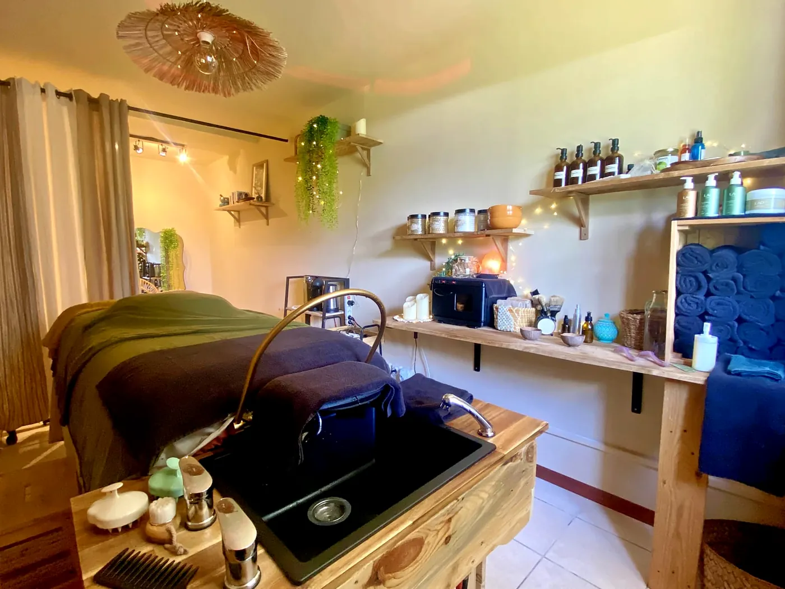
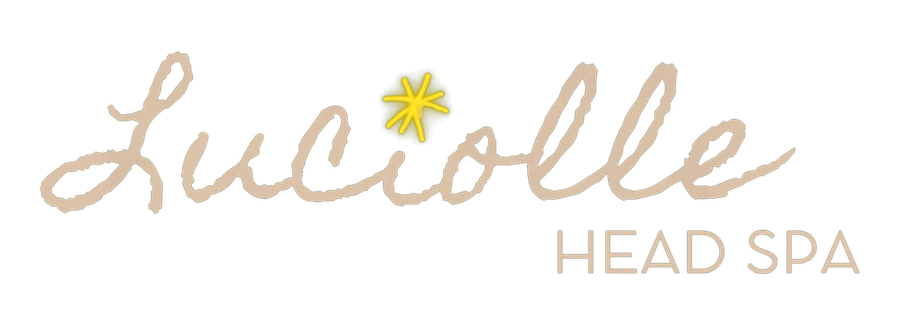
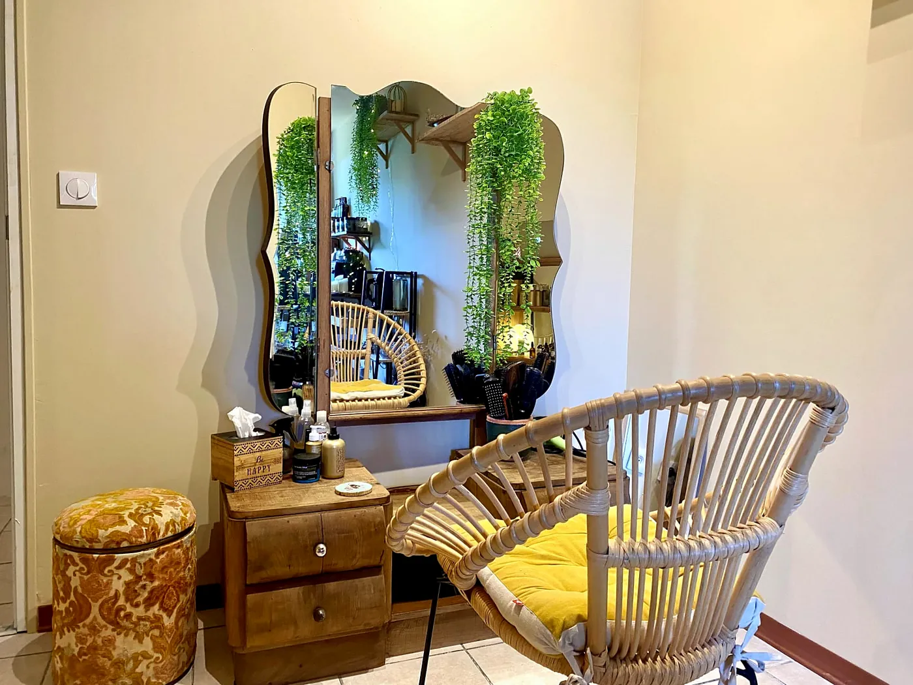
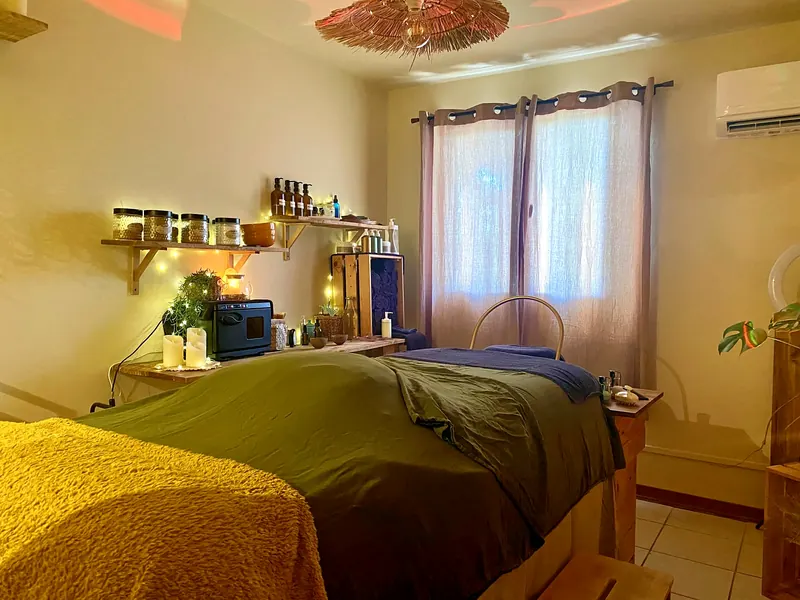
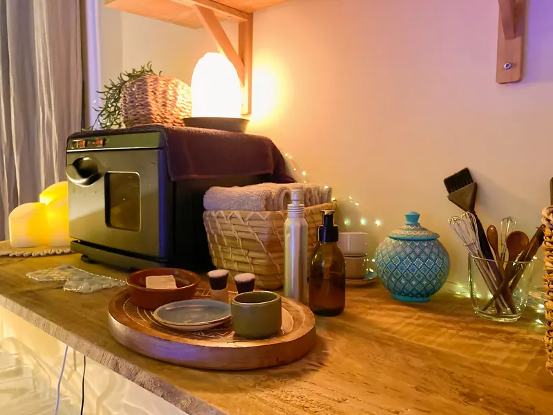
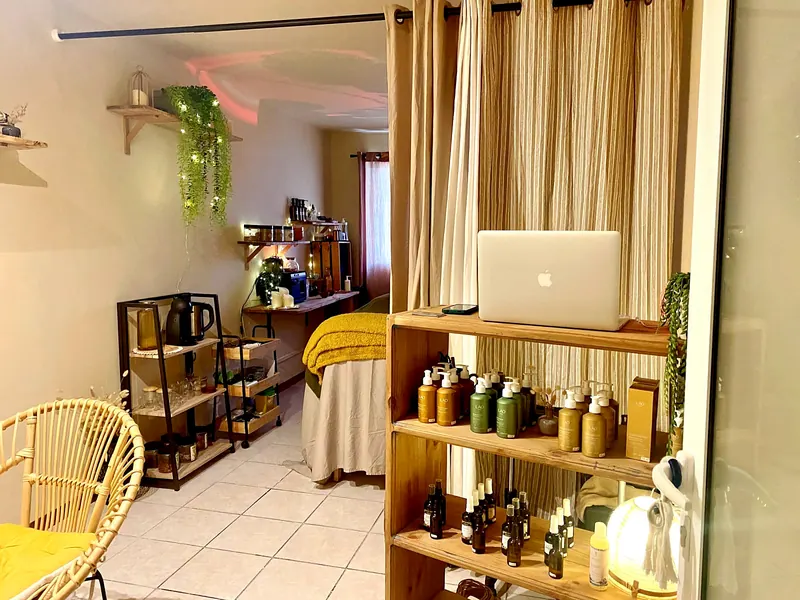

L'échappée
Une parenthèse de bien-être pour découvrir l'univers Luciolle ou profiter d'un soin ciblé.


Head spa · soins du cuir chevelu · rue Sainte-Marie, Saint-Denis
Ici, tu entres dans un espace intimiste, pensé pour ralentir : un lieu où on prend le temps, vraiment.
★★★★★ 5,0 sur Planity · 63 avis
65 rue Sainte-Marie, 97400 Saint-Denis · du mardi au samedi
Bienvenue chez Luciolle
Coiffeuse depuis près de 20 ans, Lucille s'est spécialisée dans l'analyse et la compréhension du cheveu et du cuir chevelu.
Au-delà du « faire beau », son objectif : t'aider à trouver ou retrouver un cuir chevelu confortable et des cheveux sains. Elle travaille au maximum avec des produits naturels, poudres de plantes, argiles et hydrolats, choisis pour leur puissance et leur respect du vivant.
Cliente ou client, cheveux courts, longs, lisses, texturés, en transition ou en questionnement : chacun·e est accueilli·e avec la même attention et la même écoute. Ici, tu peux parler, ou simplement venir respirer.

Le déroulé d'un rituel
« Parce que tes cheveux ont leur propre histoire, prenons le temps de les écouter. »
La carte
Chaque personne est unique : chaque rituel est entièrement personnalisé. Plus tu choisis de temps, plus les soins peuvent s'approfondir, se combiner, ou laisser place à l'échange.
Une parenthèse de bien-être pour découvrir l'univers Luciolle ou profiter d'un soin ciblé.
L'équilibre idéal entre diagnostic, soins et détente.
Recommandée pour une première expérienceUne immersion complète dans l'univers du Head Spa : cuir chevelu, cheveux et visage, ou un massage en plus.
Bien plus qu'un Head Spa, une expérience profondément personnelle. Ici, rien ne presse : le temps t'appartient.
des mains, de l'huile végétale et du temps
à vivre seules ou en complément
un accompagnement sur la durée
toujours avec la touche Luciolle
Tarifs et descriptions publiés par Luciolle Head Spa sur sa page Planity (novembre 2026).
Le lieu
fais glisser →



Un rituel à part · 2 h · 120 €
« Tu ressens le besoin de te délester de quelque chose, de couper avec ce qui ne te correspond plus ? Et si tes cheveux t'accompagnaient dans cette démarche ? »
Lucille, sur la page Planity de LuciolleUn temps d'écoute pour poser une intention, un tirage de cartes si tu le souhaites, puis shampooing, masque et massage du cuir chevelu. Vient ensuite la coupe au rasoir, mèche par mèche, en pleine conscience, et une harmonisation pour apporter de la brillance. Tout ce qui se partage reste entre vous.
Ils et elles en parlent
Lucille est d’une douceur incomparable ! Le soin a été un pur moment de détente et de relaxation. Je reviendrais sans hésiter pour un autre moment de zenitudeAvis client sur Planity, 04/11/2026
Une expérience Head Spa trop trop trop bien ! Adepte de ces soins je suis ravie d'avoir croisé le chemin de Lucille. J'y retournerai avec grand plaisir et je recommande sans modération !Avis client sur Planity, avril 2025
Avant ton rendez-vous
Offrir pour Noël
Un rituel pour ralentir, un massage du cuir chevelu, une parenthèse tout à soi : écris à Lucille pour offrir un moment chez Luciolle à quelqu'un que tu aimes.
Illustration : carte à offrir
Venir chez Luciolle
Réservation en ligne 24 h/24 sur Planity, avec confirmation immédiate. Pour la cure Renaissance Capillaire ou une question, Lucille répond au téléphone.